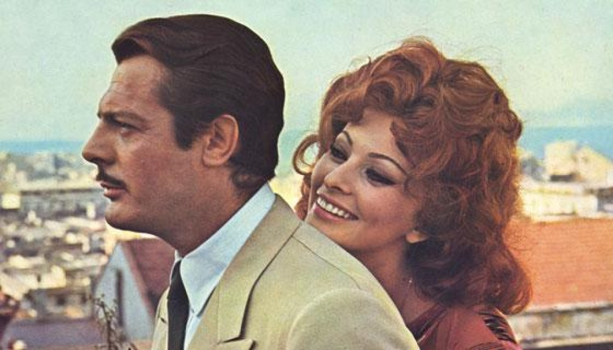
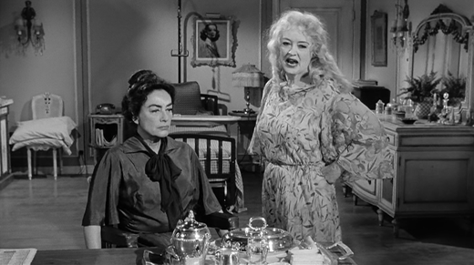
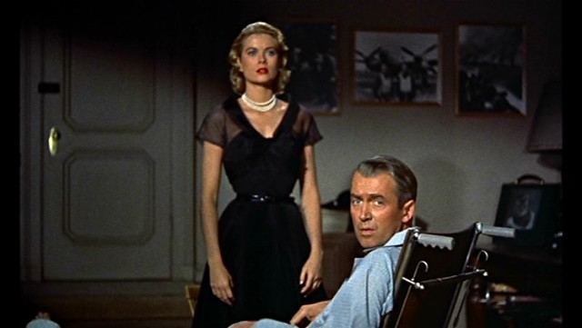
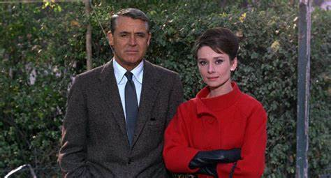
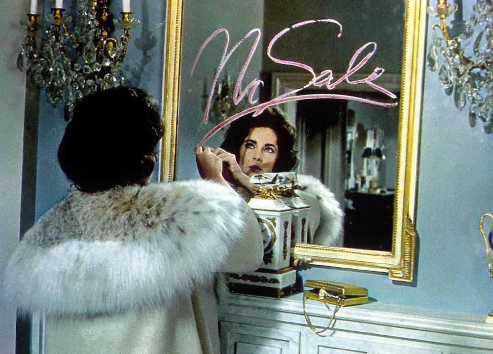
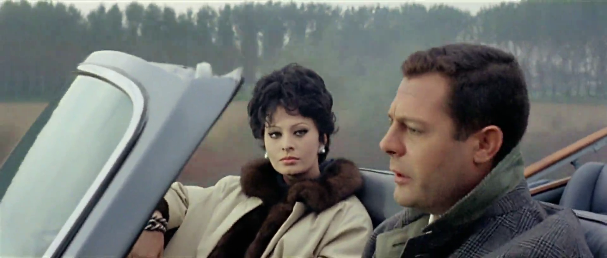
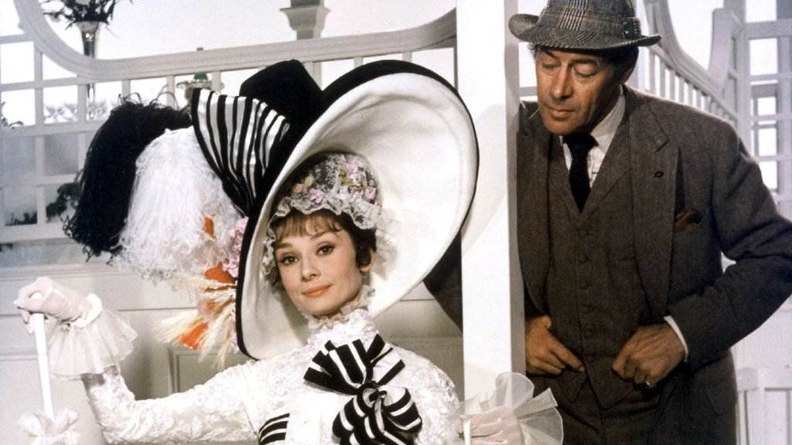
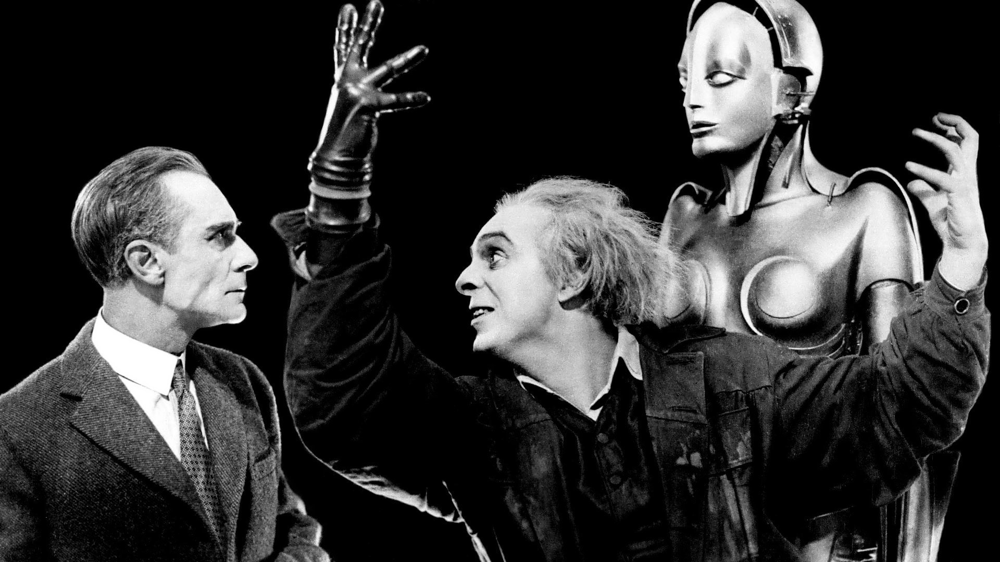
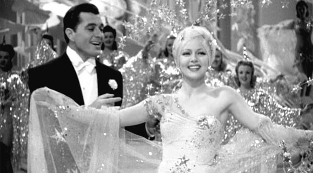
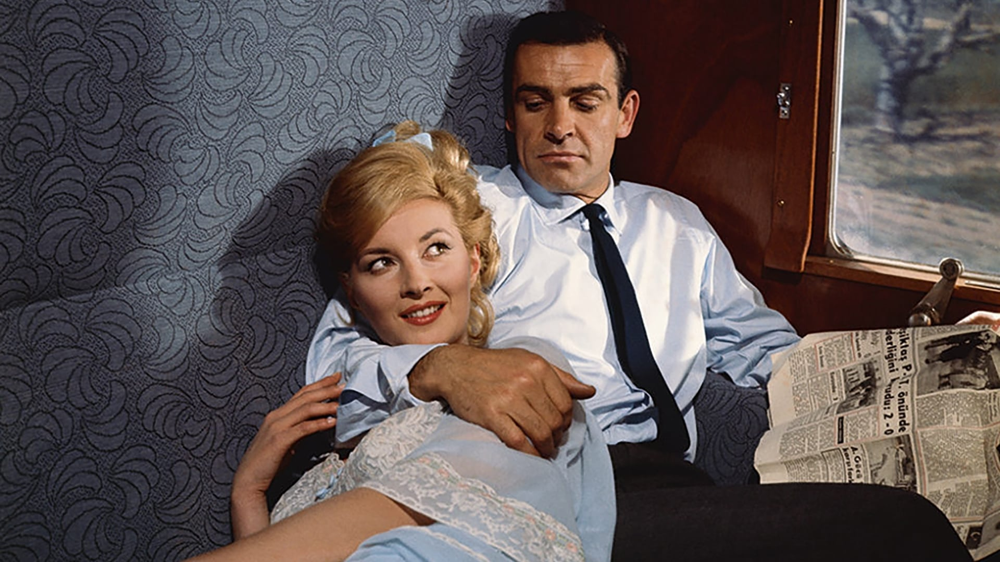

While everyone loves a good movie, we all know nothing quite hits like a classic. But what happens when your go-to classics become repetitive? Check out the list below if you're interested in some new (old) reccomenedations!
1. Marriage Italian Style 👼

Staring Sophia Loren and Marcello Mastroianni, "Marriage Italian Style", or "Matrimonio all'Italiana" makes it to the top of my favorite films list. Filomena demonstrates the difficulties of motherhood in her unconventional life. She proves that all humans derserve love and equality, no matter their situation.
2. What Ever Happened to Baby Jane? 💀

This unassumingly creepy film, will leave you questioning not only childhood stardom, but also the integrity of sisterly retionships. Real life enemies, Bette Davis and Joan Crawford duel on screen giving fans the most anticipated cat fight in Hollywood.
3. Rear Window 🕵

Even creepier we have "Rear Window". Bound to his apartment with a broken leg, Jefferies has no choice, but to stare out the window to pass the time. He becomes the only witness to an unthinkable crime and battles to tell the truth.
4. Charade 🤐

Here we have a classic mystery/romance movie staring Audrey Hepburn and Cary Grant. After Regina's husband is sudddenly murdered in an effort to steal her fortune, slews of sketchy men try to offer her help... are they genuine or do they want her fortune as well?
5. Butterfield 8 💋

Liz Taylor's finest work! Butterfield 8 gives insight on some of New York's most conspicuous and misunderstood women. Despite Gloria's mistakes, the audience can't help but have sympathy for her. Dramatic, and touching, this movies is a delightful (and not creepy) film.
6. Ieri, Oggi, e Domani 💘

Another masterpiece starring the Loren Mastroianni duo, Ieri, Oggi, e Domani showcases the lives of three very different couples.
7. My Fair Lady 👑

With music, romance, and linguistics lessons, what's not to love? Rex Harrison's character does a fine job of turning a street girl into a "fair lady", just by improving her speech.
8. Metropolis 🤖

Aaaaannnddd we're back to creepy. One of the earliest films ever made, "Metropolis" is set in a futuristic distopian society. The silent film showcases the disparities amongst societal classes and illuminates how societal structure dehumanizes us. It is creepy because it is accurate.
9. Ziegfeld Girl 👯

A film based on the real lives three Ziegfeld Follies' showgirls, the production is a spectacular sight. With elborate costumes, sets, and even storyline, the film will make you yearn for a bygone era.
10. From Russia With Love 🤵

Action movies are for everyone, and From Russia with Love does not disappoint! As Sean Connery's big debut as 007 the first James Bond movie is a smash hit that can be enjoyed by the whole family.
As you can see, I have a knack for creepy and sappy old movies. There's something more genuine these movies that take place in an era untouched by smartphones and the internet. I encourage you to watch one and think about how the times have changed. And FYI there is no copyright on Charade or Metropolis. ;)